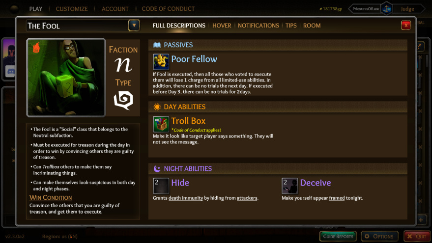

Trollbox, Deathimmunity and Frame all make sense and help to achieve his wincon
But I’m open for different suggestions
Because that’s fools core
You have to rename Fool if you want to change his wincon imho
(unless maybe minor changes)
It would have the same effect but a different express goal
FoL “Fool”? That’s… just a weird sellsword-like class (has a bit of Scorned either) in my eyes, and has nothing in common with the real fool
To be honest in ToL hating Fool is a personal dislike, in FoL not having a Jester is absolutely fucking neccecary. It’s not enough of a problem in turbo that it absolutely must be removed, even if I really really want it to, but enough people like it for… some reason.
i think the solution i came up with was to remove Poor Fellow and instead of making there be a punishment for killing Fool during the day and instead let there be a reward for killing Fool during the night- makes people incentivised to read for Fools, makes it a lot less plain annoying to lynch a fool, and allows the role to fairly interact with both allignments.
1 Like
Agree
Agreed.
problem is that in order to remake Fool to make it easish for both allignments to kill him, i’d have to relearn the ToL meta, and that would take like… effort?
The real trick is to vote the Fool up and make the other team vote execute on him
I won a cult game as BD King because I somehow tricked the cultists into executing the Fool
I knew it’s a Fool. I’m not sure if they knew too.
Wouldn’t you prefer there to be more easy ways of interacting with Fool apart from being on trial?
1 Like
There are a lot?
Most common are jail execute and bleeding them
Attacks/CS at night can work if the Fool doesn’t expect that
don’t people still complain about executing a Fool hurting wolves far more than villagers?
1 Like
Oh and you can vote him to Neutral King, of course… (if you don’t like having a neut king, you can execute him then or let him butler poison)
No? Just don’t vote execute as Cult or Assassin when you still have 2f1
I’m not sure if we talk about the same fool… I don’t see how he hurts scum much

So basically it WIFOMs every decision you make because the punishment for them being executed is a wasted lynch and a loss of ability uses. My point is that with lynching fool going from being a punishment to a loss of a reward, people don’t feel threatened by Fool but will instead look for Fools not only to not execute them but will proactively try to get suspected Fools killed.
Also, what the hell why does it force nolynches that was always the worst part of Fool
1 Like
clicks fingers that’s right, there was a time where it only removed limited uses and didn’t force a nolynch, which fucked over wovles way more than it did villagers
2 Likes
Trials aren’t that strong in ToL. They are pretty good, but you can win without…
you do realise “you can win this game without lynching” is a sure-fire sign that the game is unfun and broken right
3 Likes
Sorry, why?
And yes I’ve played trialless ToL a few times (thanks bugs  ), it’s hecking hard to get rid of deathimmune classes and NKs, but if you can keep your Prince alive, it’s somehow managable.
), it’s hecking hard to get rid of deathimmune classes and NKs, but if you can keep your Prince alive, it’s somehow managable.